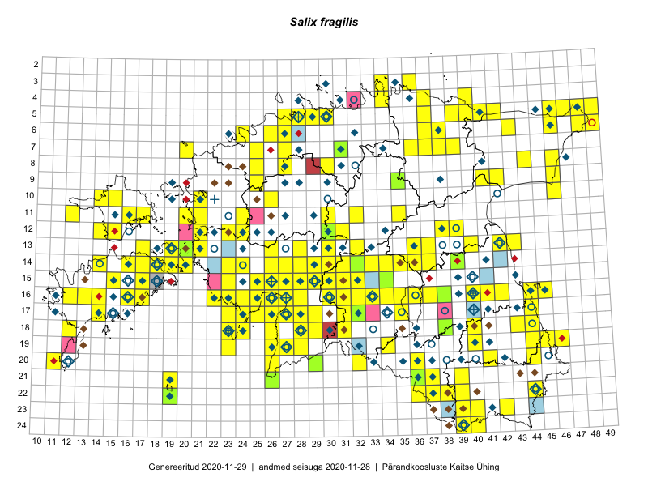

Salix fragilis
Uuendatud: 2016-12-08
Kaardile koondatud taksonid: Salix fragilis L.

Kaart põhineb 169 vaatlusel. Taime on leitud 144 ruudust.
| Ruut | Vaatleja(d) | Vaatlusaeg | Kirje tüüp | Viide andmebaasikirjele |
|---|---|---|---|---|
| 16-40 | Thea Kull | 2015-07-07 | ruut/ala | vaata PlutoFis |
| 11-35 | Ott Luuk, Peedu Saar | 2015-07-27 | ruut/ala | vaata PlutoFis |
| 05-49 | Tiit Hallikma, Toomas Kukk | 2015-07-22 | ruut/ala | vaata PlutoFis |
| 16-41 | Peedu Saar, Eerik Leibak | 2015-07-30 | ruut/ala | vaata PlutoFis |
| 06-49 | Toomas Kukk, Eerik Leibak | 2015-04-26 | ruut/ala | vaata PlutoFis |
| 17-27 | Peedu Saar, Liina Oja | 2015-06-09 | ruut/ala | vaata PlutoFis |
| 16-45 | Toomas Kukk, Eerik Leibak | 2015-07-29 | ruut/ala | vaata PlutoFis |
| 08-44 | Peedu Saar, Liina Oja | 2015-07-20 | ruut/ala | vaata PlutoFis |
| 14-36 | Peedu Saar | 2015-08-04 | ruut/ala | vaata PlutoFis |
| 13-40 | Peedu Saar | 2015-08-10 | ruut/ala | vaata PlutoFis |
| 05-47 | Tiit Hallikma, Toomas Kukk | 2015-07-22 | ruut/ala | vaata PlutoFis |
| 12-39 | Peedu Saar, Eerik Leibak | 2015-08-16 | ruut/ala | vaata PlutoFis |
| 12-21 | Tiit Hallikma, Toomas Kukk | 2015-08-27 | ruut/ala | vaata PlutoFis |
| 10-15 | Thea Kull | 2015-06-15 | ruut/ala | vaata PlutoFis |
| 16-17 | Meeli Mesipuu, Kadri Tali | 2015-07-06 | ruut/ala | vaata PlutoFis |
| 14-16 | Meeli Mesipuu | 2015-07-10 | ruut/ala | vaata PlutoFis |
| 19-45 | Toomas Kukk, Timo Luhamäe, Kersti Tambets, Sten Mander, Janika Sammasto | 2014-07-29 | ruut/ala | vaata PlutoFis |
| 14-29 | Ott Luuk, Hannes Pehlak | 2015-06-10 | ruut/ala | vaata PlutoFis |
| 19-27 | Meeli Mesipuu, Indrek Tammekänd | 2015-07-14 | ruut/ala | vaata PlutoFis |
| 08-46 | Meeli Mesipuu, Timo Luhamäe | 2015-07-21 | ruut/ala | vaata PlutoFis |
| 17-24 | Indrek Tammekänd, Ly Tammekänd | 2015-07-06 | ruut/ala | vaata PlutoFis |
| 19-45 | Thea Kull, Meeli Mesipuu | 2015-08-19 | ruut/ala | vaata PlutoFis |
| 21-26 | Ott Luuk, Eerik Leibak, Liisa Rennel | 2015-05-20 | ruut/ala | vaata PlutoFis |
| 19-44 | Thea Kull, Meeli Mesipuu | 2015-08-12 | ruut/ala | vaata PlutoFis |
| 05-41 | Meeli Mesipuu, Timo Luhamäe | 2015-07-24 | ruut/ala | vaata PlutoFis |
| 11-16 | Eeva-Maria Jeletsky, Tarmo Niitla | 2015-06-22 | ruut/ala | vaata PlutoFis |
| 11-17 | Eeva-Maria Jeletsky, Tarmo Niitla | 2015-06-17 | ruut/ala | vaata PlutoFis |
| 06-43 | Eerik Leibak, Thea Kull | 2014-09-11 | ruut/ala | vaata PlutoFis |
| 12-14 | Eeva-Maria Jeletsky, Tarmo Niitla | 2015-06-25 | ruut/ala | vaata PlutoFis |
| 12-15 | Eeva-Maria Jeletsky, Tarmo Niitla | 2015-06-25 | ruut/ala | vaata PlutoFis |
| 12-15 | Eeva-Maria Jeletsky, Tarmo Niitla | 2015-06-26 | ruut/ala | vaata PlutoFis |
| 11-32 | Ott Luuk, Toivo Sepp | 2015-08-18 | ruut/ala | vaata PlutoFis |
| 21-39 | Eeva-Maria Jeletsky, Tarmo Niitla | 2015-07-26 | ruut/ala | vaata PlutoFis |
| 22-38 | Eeva-Maria Jeletsky, Tarmo Niitla | 2015-07-15 | ruut/ala | vaata PlutoFis |
| 23-39 | Eeva-Maria Jeletsky, Tarmo Niitla | 2015-07-24 | ruut/ala | vaata PlutoFis |
| 24-40 | Eeva-Maria Jeletsky, Tarmo Niitla | 2015-07-25 | ruut/ala | vaata PlutoFis |
| 16-24 | Maret Gerz, Leena Gerz | 2015-08-09 | ruut/ala | vaata PlutoFis |
| 17-24 | Maret Gerz, Leena Gerz | 2015-08-12 | ruut/ala | vaata PlutoFis |
| 16-25 | Maret Gerz, Leena Gerz | 2015-08-09 | ruut/ala | vaata PlutoFis |
| 07-25 | Erkki Otsman, Sergei Smirnov | 2015-07-17 | ruut/ala | vaata PlutoFis |
| 23-40 | Eeva-Maria Jeletsky, Tarmo Niitla | 2015-08-05 | ruut/ala | vaata PlutoFis |
| 15-25 | Maret Gerz, Leena Gerz | 2015-08-08 | ruut/ala | vaata PlutoFis |
| 05-29 | Erkki Otsman, Sergei Smirnov | 2015-07-12 | ruut/ala | vaata PlutoFis |
| 14-39 | Erkki Otsman, Sergei Smirnov | 2015-07-21 | ruut/ala | vaata PlutoFis |
| 17-25 | Maret Gerz, Leena Gerz | 2015-08-08 | ruut/ala | vaata PlutoFis |
| 13-36 | Toivo Sepp, Eerik Leibak | 2015-05-13 | ruut/ala | vaata PlutoFis |
| 17-24 | Maret Gerz, Leena Gerz | 2015-08-12 | ruut/ala | vaata PlutoFis |
| 16-26 | Indrek Tammekänd | 2015-05-11 | ruut/ala | vaata PlutoFis |
| 12-38 | Ulvi Selgis | 2015-08-21 | ruut/ala | vaata PlutoFis |
| 17-29 | Meeli Mesipuu, Timo Luhamäe | 2015-06-09 | ruut/ala | vaata PlutoFis |
| 17-29 | Meeli Mesipuu, Timo Luhamäe | 2015-06-09 | ruut/ala | vaata PlutoFis |
| 17-29 | Meeli Mesipuu, Timo Luhamäe | 2015-06-09 | punkt | vaata PlutoFis |
| 19-46 | Meeli Mesipuu, Thea Kull | 2015-08-19 | ruut/ala | vaata PlutoFis |
| 12-23 | Thea Kull, Eerik Leibak | 2015-08-26 | ruut/ala | vaata PlutoFis |
| 13-43 | Meeli Mesipuu, Thea Kull | 2014-08-14 | ruut/ala | vaata PlutoFis |
| 13-42 | Meeli Mesipuu, Thea Kull | 2015-08-14 | ruut/ala | vaata PlutoFis |
| 14-18 | Karin Kikas, Elle Rajandu | 2015-07-21 | ruut/ala | vaata PlutoFis |
| 15-17 | Karin Kikas, Elle Rajandu | 2015-07-21 | ruut/ala | vaata PlutoFis |
| 17-14 | Karin Kikas, Elle Rajandu | 2015-07-22 | ruut/ala | vaata PlutoFis |
| 07-39 | Kaili Orav, Silvia Pihu | 2015-06-17 | ruut/ala | vaata PlutoFis |
| 07-38 | Kaili Orav, Silvia Pihu | 2015-06-17 | ruut/ala | vaata PlutoFis |
| 05-42 | Kaili Orav, Silvia Pihu | 2015-06-18 | ruut/ala | vaata PlutoFis |
| 06-38 | Kaili Orav, Silvia Pihu | 2015-07-20 | ruut/ala | vaata PlutoFis |
| 05-40 | Kaili Orav, Silvia Pihu | 2015-07-21 | ruut/ala | vaata PlutoFis |
| 14-33 | Aat Sarv | 2016-04-25 | ruut/ala | vaata PlutoFis |
| 11-20 | Hanna-Eliisa Luts, Tõnu Ploompuu | 2015-08-13 | ruut/ala | vaata PlutoFis |
| 09-25 | Ott Luuk, Tiit Hallikma | 2016-05-13 | ruut/ala | vaata PlutoFis |
| 18-29 | Toomas Kukk, Tiit Hallikma | 2016-06-03 | ruut/ala | vaata PlutoFis |
| 19-26 | Peedu Saar, Thea Kull | 2016-06-07 | ruut/ala | vaata PlutoFis |
| 18-38 | Meeli Mesipuu, Timo Luhamäe | 2016-06-13 | ruut/ala | vaata PlutoFis |
| 22-39 | Meeli Mesipuu, Timo Luhamäe | 2016-06-16 | ruut/ala | vaata PlutoFis |
| 18-40 | Toomas Kukk, Tiit Hallikma, Johannes Kõdar | 2016-06-13 | ruut/ala | vaata PlutoFis |
| 23-42 | Rein Kalamees, Eerik Leibak | 2016-06-14 | ruut/ala | vaata PlutoFis |
| 21-19 | Silvia Pihu | 2015-07-01 | ruut/ala | vaata PlutoFis |
| 21-36 | Silvia Pihu | 2015-06-28 | ruut/ala | vaata PlutoFis |
| 21-37 | Silvia Pihu | 2015-06-28 | ruut/ala | vaata PlutoFis |
| 22-36 | Silvia Pihu | 2015-06-27 | ruut/ala | vaata PlutoFis |
| 22-37 | Silvia Pihu | 2015-06-27 | ruut/ala | vaata PlutoFis |
| 13-26 | Thea Kull | 2016-06-22 | ruut/ala | vaata PlutoFis |
| 14-24 | Thea Kull | 2016-06-21 | ruut/ala | vaata PlutoFis |
| 17-44 | Maret Gerz, Liina Oja | 2016-06-13 | ruut/ala | vaata PlutoFis |
| 18-44 | Maret Gerz, Liina Oja | 2016-06-17 | ruut/ala | vaata PlutoFis |
| 18-43 | Maret Gerz, Liina Oja | 2016-06-17 | ruut/ala | vaata PlutoFis |
| 14-28 | Thea Kull, Tiit Hallikma | 2016-07-08 | ruut/ala | vaata PlutoFis |
| 15-25 | Toomas Kukk, Oliver Parrest | 2016-07-08 | ruut/ala | vaata PlutoFis |
| 06-26 | Tiina Elvisto, Eerik Leibak | 2016-07-04 | ruut/ala | vaata PlutoFis |
| 14-23 | Thea Kull, Eerik Leibak | 2016-07-05 | ruut/ala | vaata PlutoFis |
| 13-28 | Thea Kull, Tiit Hallikma | 2016-07-08 | ruut/ala | vaata PlutoFis |
| 17-32 | Toomas Kukk, Eerik Leibak | 2016-07-20 | ruut/ala | vaata PlutoFis |
| 18-31 | Toomas Kukk, Hannes Pehlak | 2016-07-19 | ruut/ala | vaata PlutoFis |
| 15-32 | Toomas Kukk, Liina Oja | 2016-07-21 | ruut/ala | vaata PlutoFis |
| 05-37 | Tõnu Ploompuu, Eerik Leibak | 2016-07-27 | ruut/ala | vaata PlutoFis |
| 05-30 | Sander Laherand, Eerik Leibak | 2016-07-29 | ruut/ala | vaata PlutoFis |
| 11-32 | Aat Sarv, Jaak-Albert Metsoja | 2016-07-21 | ruut/ala | vaata PlutoFis |
| 09-42 | Ott Luuk, Eerik Leibak | 2016-08-05 | ruut/ala | vaata PlutoFis |
| 09-41 | Ott Luuk, Eerik Leibak | 2016-08-05 | ruut/ala | vaata PlutoFis |
| 05-46 | Erkki Otsman, Sergei Smirnov | 2016-06-17 | ruut/ala | vaata PlutoFis |
| 14-23 | Erkki Otsman, Sergei Smirnov | 2016-06-22 | ruut/ala | vaata PlutoFis |
| 14-34 | Thea Kull, Tiit Hallikma | 2016-07-22 | ruut/ala | vaata PlutoFis |
| 04-37 | Thea Kull, Eerik Leibak, Susanna Vain | 2016-07-26 | ruut/ala | vaata PlutoFis |
| 13-32 | Thea Kull, Raivo Kalle, Susanna Vain | 2016-07-21 | ruut/ala | vaata PlutoFis |
| 17-14 | Toomas Kukk, Meeli Mesipuu, Johannes Kõdar | 2016-08-11 | ruut/ala | vaata PlutoFis |
| 15-17 | Peedu Saar, Toomas Kukk | 2016-08-13 | ruut/ala | vaata PlutoFis |
| 13-26 | Maret Gerz, Liina Oja | 2016-07-08 | ruut/ala | vaata PlutoFis |
| 11-12 | Peedu Saar, Thea Kull | 2016-08-10 | ruut/ala | vaata PlutoFis |
| 15-26 | Aat Sarv, Maret Gerz | 2016-07-04 | ruut/ala | vaata PlutoFis |
| 13-21 | Aat Sarv, Maret Gerz | 2016-07-05 | ruut/ala | vaata PlutoFis |
| 12-31 | Aat Sarv, Indrek Tammekänd | 2016-07-22 | ruut/ala | vaata PlutoFis |
| 12-30 | Aat Sarv, Indrek Tammekänd | 2016-07-22 | ruut/ala | vaata PlutoFis |
| 14-35 | Liina Oja, Elle Rajandu, Susanna Vain | 2016-07-22 | ruut/ala | vaata PlutoFis |
| 11-17 | Maret Gerz, Meeli Mesipuu | 2016-08-08 | ruut/ala | vaata PlutoFis |
| 22-44 | Peedu Saar, Karin Kikas | 2016-08-19 | ruut/ala | vaata PlutoFis |
| 07-36 | Karin Kikas, Elle Rajandu | 2016-06-27 | ruut/ala | vaata PlutoFis |
| 20-36 | Thea Kull, Ott Luuk | 2016-08-23 | ruut/ala | vaata PlutoFis |
| 11-30 | Erkki Otsman, Sergei Smirnov | 2016-07-18 | ruut/ala | vaata PlutoFis |
| 07-27 | Erkki Otsman, Sergei Smirnov | 2016-07-21 | ruut/ala | vaata PlutoFis |
| 09-46 | Meeli Mesipuu, Karin Kikas | 2016-08-31 | ruut/ala | vaata PlutoFis |
| 11-16 | Toomas Kukk, Thea Kull | 2016-08-08 | ruut/ala | vaata PlutoFis |
| 12-15 | Toomas Kukk, Meeli Mesipuu | 2016-08-10 | ruut/ala | vaata PlutoFis |
| 12-14 | Toomas Kukk, Meeli Mesipuu | 2016-08-10 | ruut/ala | vaata PlutoFis |
| 10-46 | Meeli Mesipuu, Karin Kikas | 2016-08-31 | ruut/ala | vaata PlutoFis |
| 21-26 | Sirje Azarov, Indrek Tammekänd | 2016-07-18 | ruut/ala | vaata PlutoFis |
| 15-30 | Sirje Azarov, Meeli Mesipuu | 2016-07-21 | ruut/ala | vaata PlutoFis |
| 13-19 | Mari Reitalu, Sirje Azarov | 2016-08-16 | ruut/ala | vaata PlutoFis |
| 14-14 | Mari Reitalu, Sirje Azarov | 2016-07-26 | ruut/ala | vaata PlutoFis |
| 14-18 | Mari Reitalu, Sirje Azarov | 2016-08-09 | ruut/ala | vaata PlutoFis |
| 14-18 | Mari Reitalu | 2016-08-15 | ruut/ala | vaata PlutoFis |
| 16-27 | Tiit Hallikma, Tõnu Ploompuu | 2016-06-20 | ruut/ala | vaata PlutoFis |
| 15-27 | Tiit Hallikma, Tõnu Ploompuu | 2016-06-20 | ruut/ala | vaata PlutoFis |
| 14-30 | Hannes Pehlak, Tõnu Ploompuu, Marko Veinbergs | 2016-07-21 | ruut/ala | vaata PlutoFis |
| 20-32 | Meeli Mesipuu, Ott Luuk | 2016-09-18 | ruut/ala | vaata PlutoFis |
| 18-24 | Peedu Saar, Ott Luuk | 2016-09-21 | ruut/ala | vaata PlutoFis |
| 08-25 | Helle Mäemets, Tiina Elvisto | 2016-07-05 | ruut/ala | vaata PlutoFis |
| 20-11 | Meeli Mesipuu | 2016-09-25 | ruut/ala | vaata PlutoFis |
| 15-15 | Meeli Mesipuu | 2016-09-23 | ruut/ala | vaata PlutoFis |
| 16-16 | Meeli Mesipuu | 2016-09-25 | ruut/ala | vaata PlutoFis |
| 06-24 | Peedu Saar, Ott Luuk | 2016-09-06 | ruut/ala | vaata PlutoFis |
| 13-17 | Peedu Saar, Ott Luuk | 2016-08-29 | ruut/ala | vaata PlutoFis |
| 11-24 | Helle Mäemets, Tiina Elvisto | 2016-07-06 | ruut/ala | vaata PlutoFis |
| 17-24 | Tiit Hallikma, Tõnu Ploompuu | 2016-07-06 | ruut/ala | vaata PlutoFis |
| 19-23 | Ott Luuk, Peedu Saar | 2016-09-21 | ruut/ala | vaata PlutoFis |
| 18-23 | Ott Luuk, Peedu Saar | 2016-09-21 | ruut/ala | vaata PlutoFis |
| 13-30 | Tõnu Ploompuu, Hannes Pehlak, Marko Veinbergs | 2016-07-21 | ruut/ala | vaata PlutoFis |
| 16-14 | Meeli Mesipuu | 2016-09-26 | ruut/ala | vaata PlutoFis |
| 16-13 | Toomas Kukk, Meeli Mesipuu | 2016-10-05 | ruut/ala | vaata PlutoFis |
| 18-12 | Toomas Kukk, Meeli Mesipuu, Mari Reitalu | 2016-10-07 | ruut/ala | vaata PlutoFis |
| 04-40 | Tiit Hallikma, Ott Luuk | 2016-07-28 | ruut/ala | vaata PlutoFis |
| 05-42 | Tiit Hallikma, Tõnu Ploompuu | 2016-07-26 | ruut/ala | vaata PlutoFis |
| 14-17 | Ott Luuk, Peedu Saar | 2016-08-29 | ruut/ala | vaata PlutoFis |
| 14-16 | Ott Luuk, Peedu Saar | 2016-08-31 | ruut/ala | vaata PlutoFis |
| 05-39 | Ott Luuk, Tiit Hallikma | 2016-07-28 | ruut/ala | vaata PlutoFis |
| 20-44 | Meeli Mesipuu | 2016-09-08 | ruut/ala | vaata PlutoFis |
| 10-26 | Meeli Mesipuu, Sirje Azarov | 2016-07-06 | ruut/ala | vaata PlutoFis |
| 19-28 | Toivo Sepp, Liina Oja | 2016-07-19 | ruut/ala | vaata PlutoFis |
| 14-31 | Toivo Sepp, Oliver Parrest | 2016-07-21 | ruut/ala | vaata PlutoFis |
| 18-26 | Meeli Mesipuu, Timo Luhamäe | 2016-07-18 | ruut/ala | vaata PlutoFis |
| 17-35 | Meeli Mesipuu, Toivo Sepp, Susanna Vain | 2016-07-20 | ruut/ala | vaata PlutoFis |
| 15-31 | Meeli Mesipuu, Sirje Azarov | 2016-07-21 | ruut/ala | vaata PlutoFis |
| 07-37 | Meeli Mesipuu, Tiit Hallikma | 2016-07-27 | ruut/ala | vaata PlutoFis |
| 06-37 | Meeli Mesipuu, Tiit Hallikma | 2016-07-27 | ruut/ala | vaata PlutoFis |
| 03-36 | Meeli Mesipuu, Liina Oja | 2016-07-26 | ruut/ala | vaata PlutoFis |
| 16-32 | Elle Rajandu, Indrek Tammekänd | 2016-07-20 | ruut/ala | vaata PlutoFis |
| 15-28 | Elle Rajandu, Tiit Hallikma | 2016-07-21 | ruut/ala | vaata PlutoFis |
| 15-29 | Elle Rajandu, Tiit Hallikma | 2016-07-21 | ruut/ala | vaata PlutoFis |
| 12-23 | Meeli Mesipuu, Maret Gerz | 2015-08-24 | ruut/ala | vaata PlutoFis |
| 22-44 | Jaak-Albert Metsoja, Mari Metsoja | 2016-06-15 | ruut/ala | vaata PlutoFis |
| 16-30 | Hannes Pehlak, Thea Kull | 2016-07-20 | ruut/ala | vaata PlutoFis |
| 06-38 | Hannes Pehlak, Thea Kull | 2016-07-25 | ruut/ala | vaata PlutoFis |
| 04-34 | Hannes Pehlak, Toomas Kukk | 2016-07-26 | ruut/ala | vaata PlutoFis |